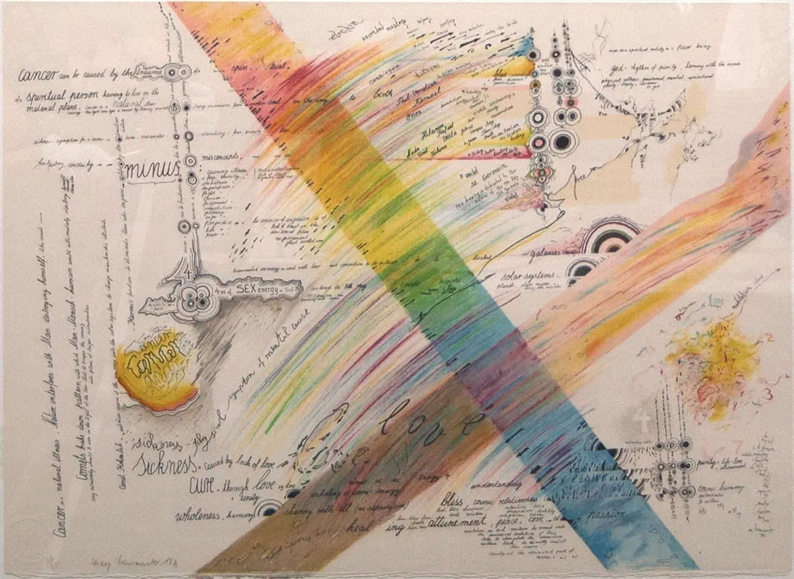
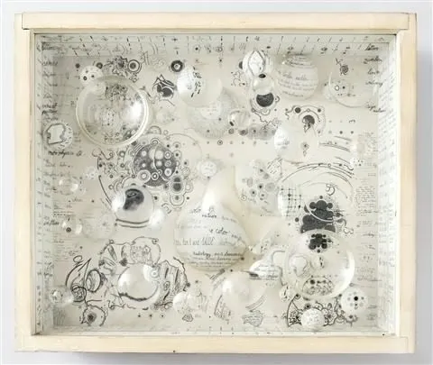
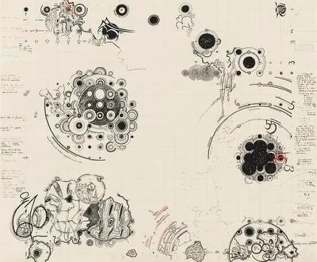
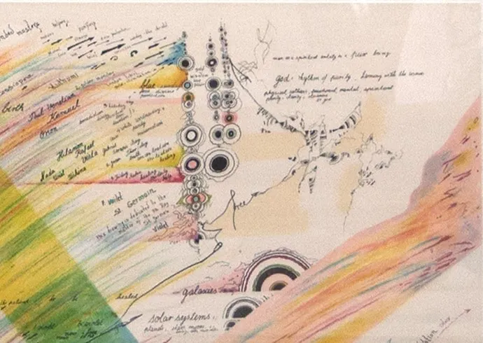
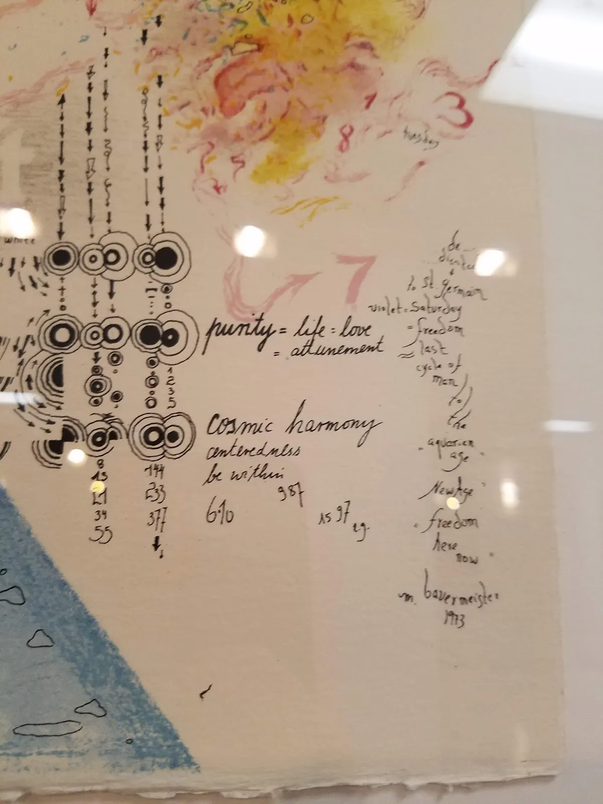
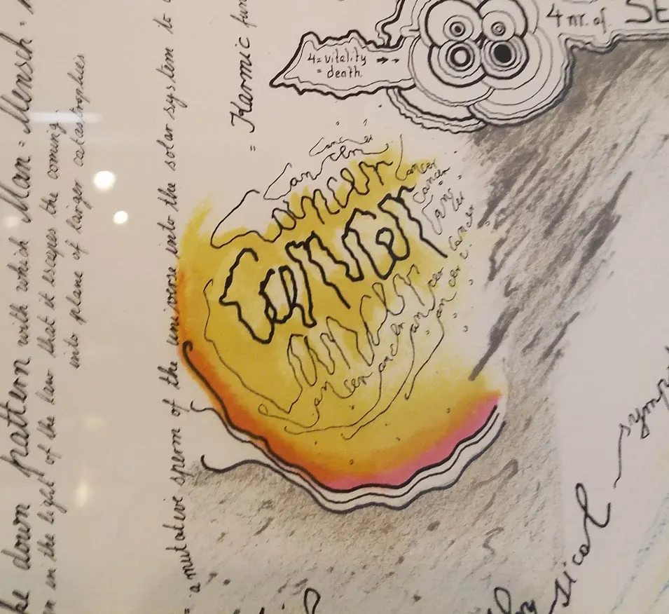
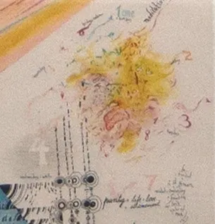
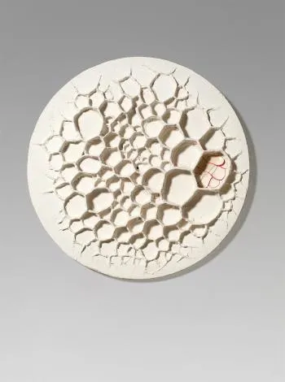
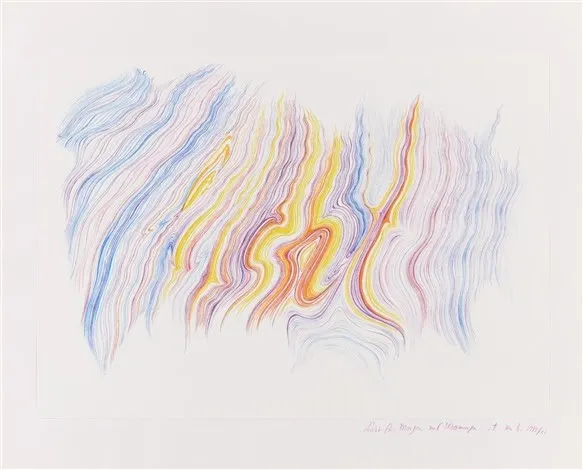

- Investigating Bauermeister's Rainbow
-

Rainbow (1973) (18.75 in. x 25.00 in)
Lithograph on paperBauermeister born 1934 Frankfurt, Germany, at the time was focused on pragmatic reconstruction on the war torn cities. Bauermeister's unique home life gave sentiment to the scientific and mystical influence. Her father's research in the genetic and anthropogenic work may have been the start of Bauermeister's fascination with the human experience, the natural laws of the world and our place within it. Additionally, she recounts "astronomy. I never forget the night sessions with my grandfather [and] father about the stars, the cycles of the planets, the mysteries of the moon and it phases - early childhood memories," (Cahill 6), serving as a source of inspiration, and childhood truth.
Additionally, growing up in post Nazi Germany affected her artistic pursuits, "the illusion of beauty; the instabilities of form, norm; the hypocrisy behind truth-spreading systems, be they religious, political, scientific," (Cahill 5), which cause her works to focus on what she calls "the in-between", and the dualism between truth and belief, or science and spirituality, and further how in our nature we analyze and patternize connection, "They were not meant as absolute truth, they were 'in-between' results of a thinking and feeling process," (Cahill).
Eventually Bauermeister grew into the Germany Fluxus and Nouveau Realism movements, eager to redefine culture in response to a new post WW2 era. The Fluxus movement aimed to bring art to all rather that the elite minority. Different than her peers, her philosophy was "to make art was more a finding, searching process than a knowing," (Bauermeister, 1963). Smith College describes her methodology as "reminiscent of 'automatic writing' (ecriture automatique), a form of spontaneous writing practiced by the Surrealists of the earlier twentieth century. Bauermeister has described her practice as 'a double process of spontaneous ideas which come up during the process of working and ... a preconceived idea,' subject to change as her composition evolves" (Muehlig).
Her "lens boxes" arguably her most well known works, are two dimensional works filled with streams of consciousness and deliberate nonsense, obscured by optical lenses, magnify glasses, and glass in wooden boxes.

Needless Needles (1972) (15.9 x 18.9 x 4.7 in.)
mixed media, india ink, glass lense
Needless Needles, 1964 (19 5/8 x 23 5/8 in)
Ink, colored ink, and pencil on paperThroughout her rise to fame in the 1960s, and her work today, it is centered on tying her natural, spiritual world with the scientific, mathematical understanding of micro and macroscopic universe. Bauermeister said in an interview "I didn't want art to be as firmly defined as science. I always wanted there to be something else, I always wanted it to enter a level or layer other than what is predetermined and predefined. I didn't want art to be as firmly defined as science." (Siano 10). Bauermeister is particularly passionate about light and optics; "If you drove with a convex lens at a certain distance over a black and white text, bordered on the border of black and white, the letters with spectral colors! Breathless, I watched this discovery. It reminded me of Faust II, where Goethe lets his fist say, 'We have the color in the colorful reflection' 'Yes, it was about light!" (Oelschlager reciting Bauermeister). This ideology reflects Goethe's experiments in "looking through lenses and the perception of colour fringe effects....of in Faust 1831 which the seeker after truth is refracted as through a prism, creating alternate identities of doubt" (Maconie 4, 8).
In Rainbow the two strips of color are like prisms of light orthogonally crossing each other's paths. The more vertical of the two, consists of the colors in order of the visible light spectrum. Strokes of pencil dash across the beam, breaking its straight lines as if to fracture and obscure the prism, just as the glass lenses obscure the image in her lense boxes.


Between the bands are clusters of dark circles, thematic in Bauermeister's work. On Needless Needles (1964), "multiple spheres, some overlapping each other, some partially framed by compass lines, suggesting the path of a planet in orbit," (Sechler). The words cosmic harmony, galaxies, solar systems, energy and a variety of constellations are clustered around these circular groups.


The two yellow colored parts of the piece below are irregular, and repetition of the words cancer and sickness make the colored bodies malignant in comparison to the circular clusters across the page, like a tumor. Bauermeister constructs a reality for the viewer where the structure and communication of bodily cells is connected to the gravitational relationships between celestial bodies and constellations, and light is a form of communicative energy, and possible spirituality in the universe.

Wabenbild/Malberg 1961 (1 3/8 in. x 1 3/8)
Casein tempera, sculptural mass, phosphor paint on panelHer early work in Wabenbild/Malberg 1961, "the possibilities (over absolute law) deriving from such encounters of Bauermeister's mystical and spiritual concerns with organic and planetary substances...It is possible to observe Bauermeister's juxtapositions between infinity of the cosmic and the cells of living organisms," (Noy 38)
In her retrospective, Bauermeister discusses how her art is a means for thought drive. "When looking at artworks, looking is generally required. Through the integration of writing, the form of perception changes, the reading is added and requires the rapid movement of the intellect from the letter to the mind, from the particular to the general, from the surface to the depth....Written words engage in dialogue with the viewer in a different way; it is a direct communication about the mind" (Oelschlager reciting Bauermeister). Her use of artistic and written communication are used as "instruments of perception, communication, and world-orientation, because they easily link two different things together - something sensuous and somewhat nonsensical, something present and something absent, something concrete and something abstract" (Oelschlager reciting Bauermeister).
"By means of single words, which in turn represent whole word fields or chains of associations, the artist can make the invisible visible....Similar to their slogan 1 + 1 = 3, these terms stand for their approach of attaching special importance to the indefinable, ambiguous, questionable and interpretable" (Oelschlager).

Orplid 1 und 2. Zweiteiliges Mappenwerk. Ca. 1979-82. (15.7 x 19.5 in.)
Lithograph on paperHer only other lithographic work which uses similar colors are her Orplid 1 and Orplid 2 from 1979 (ill. Pp. 68-75), "which were created in response to the death of their mother...in which she painstakingly realized the farewell to her mother, who had always been supportive of her side, but dedicated to life, dealing with the hereafter, the reversal of space and time," (Oelschlager). It is possible that Rainbow is a way for Bauermeister to conceptualize, intellectualize and spiritualize her mother's battle with cancer.
To conclude, although Rainbow creates a relationship between the human experience, the cellular and celestale, it does not project Bauermeister's own spirituality and experience. Rainbow is valuable in that it is made shortly after her artistic voice in the Fluxus movement and the start of her lense boxes. It culminates her use of art as a way to change our perception of reality, and deviate from absolute truth, adding humanity to her intellectualization of her mother's illness.
sources
Abeyta, Jennifer. "Mary Bauermeister- Rainbow." University Art Gallery, New Mexico State University, 8 Dec. 2016, www.uag.nmsu.edu/mary-bauermeister-rainbow/.
Bauermeister, Mary. "Mary Bauermeister - Detailed Biography." Edited by Simon Stockhausen, Mary Bauermeister Virtual Gallery, 2017, www.marybauermeister.org/biography.html.
Bauermeister, Mary, and Linda D. Muehlig. Mary Bauermeister, The New York Decade. Smith College Museum of Art, 2014.
Bauermeister, Wolf. "Die Pneumatisierung Des Schädels Bei Den Anthropoiden Und Dem Gibbon Und Ihre Bedeutung Für Die Menschliche Abstammungslehre." Zeitschrift Für Morphologie Und Anthropologie, vol. 38, no. 1, 1939, pp. 90-121. JSTOR, www.jstor.org/stable/25749616.
Boecker, Susanne, and Mary Bauermeister. "DUBIO ERGO SUM (I Doubt, Therefore I Am)." Art Museum Villa Zanders, Dec. 2017, www.villa-zanders.de/download/portrait.pdf. Accessed 5 Dec. 2018.
Cahill, Timothy, and Mary Bauermeister. "The Great Society An Exuberant Assemblage from the 1960s Leads to an Overlooked Master." Art Conservator, vol. 4, no. 1, 2009, pp. 4-7.
Maconie, Robin. "Message of 'Light': Goethe, Stockhausen and the New Enlightenment." Tempo, vol. 58, no. 230, 2004, pp. 2-8. JSTOR, www.jstor.org/stable/3878733.
"Mary Bauermeister - Signs, Words, Universes." Mary Bauermeister - Zeichen, Worte, Universen = Signs, Words, Universes, by Oelschlägel, Petra, Verlag Kettler, 2017, pp. 39-54, www.in-gl.de/wp-content/uploads/2017/11/Mary_Bauermeister_Katalog.pdf.
Noy, Irene. "Art That Does Not Make Noise? Mary Bauermeister's Early Work and Exhibition with Karlheinz Stockhausen." Immediations The Courtauld Institute of Art Journal Postgraduate Research, vol. 3, no. 2, 2013, pp. 24-43.
Sechler, Jenny Miller. "Mary Bauermeister: The New York Decade." Art New England, Northampton Arts, Inc., 6 Apr. 2015, www.artnewengland.com/blogs/mary-bauermeister-the-new-york-decade/.
Siano, Leopoldo. "Between Music and Visual Art in the Sixties: Mary Bauermeister and Karlheinz Stockhausen." The Music Legacy of Karlheinz Stockhausen: Looking Back and Forward, University of Cologne, 2016.